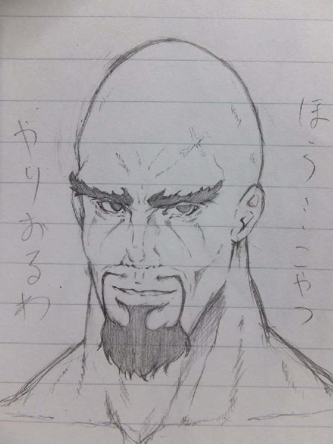
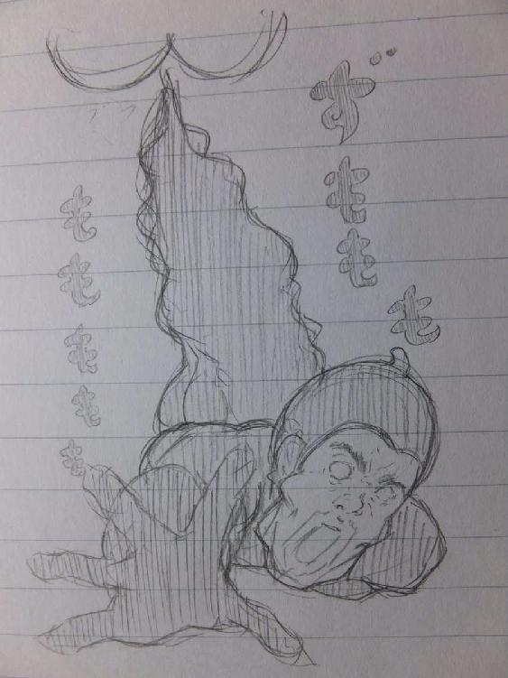

| ひかりのさすほうへ (おふざけ ギャグ イラスト 短編 ショートショート) | |
| 一刺し ムサシ | |
| (2018) | |
『最後に一つだけ聴きたいのだが、よろしいか？』
～男子便所の秘密編～

お父ちゃん「キミのような好青年に、うちの娘を任せられるとは幸せなことだ」
娘「...お父さま」
好青年「娘さんとは知り合った時から、当然のことですが結婚を前提にしてお付き合いをさせていただいておりました。よって、指一本、触れてはおりません」
お父ちゃん「...古き良き時代に生きる男、そんなものがまだこの現代に存在したとは...（涙）」
娘「...お父さま」
好青年「お父さん、顔を上げてください。さぁ、ハンカチをどうぞ」
お父ちゃん「...これは...香り付きのハンカチ...さすがだな...。男子便所で手も洗わないビチクソ野郎どもが蔓延している世界で...あいつ等は便器から離れたらそのまま穢れた手でドアノブを触り、そしてまた世の中をペタペタ這いずり回る、そんな腐りきった世界の片隅にキミは...（涙）」
娘「...お父さま」
好青年「はい。残念なことです。そして、世の多くの女性はその事実を知らないでしょうね。」
お父ちゃん「家の娘には三歳の時から言い聞かせていたがな。幼稚園児のほうが社会に出た糞野郎どもよりもよっぽどハンカチを持ち歩いているくらいなんだと。私はずっとそんな不潔な野郎どもが娘に近寄らないようにこれまで守ってきたのだ」
好青年「素晴らしい教育だと思います。私もそのような愛で包まれた家庭を築いていきたいものです」
お父ちゃん「きっとキミならできる。いや、キミしか娘を幸せにできるヤツはおらん。キミしかおらんぞな！頼んだぞ！」
好青年「はい！わたくしにお任せください！」
お父ちゃん「よし。まぁ、堅い話はこれくらいにして、一杯だけでも飲まんか？」
娘「...お父さま」
好青年「お父さん。申し訳ないですが酒はダメなんで、オレンジジュースにしてください。（車の鍵をかかげる）」
お父ちゃん「おぉ、そうだったな。なんだか嬉しくて舞い上がってしまったようでな...」
娘「...お父さま」
好青年「では、また日を改めまして。次は一緒に、時間の許す限り飲みましょう。飲みましょうぞ！」
お父ちゃん「おぉ。約束だぞ！」
好青年「はい！それでは、失礼します（礼）」
お父ちゃん「...あ。すまんが...」
好青年「はい？どうされました（振り向きざま）」
お父ちゃん「最後に、一つだけ聴きたいのだが、よろしいか？」
娘「...お父さま」
お父ちゃん「もちろんのこと。キミなら完璧にこなしているとは思うのだが、やはり何事も確認というものは重要なことだ」
好青年「はい。お聞きしましょう。何でしょうか？」
お父ちゃん「その...キミは。トイレでウォシュレットは当然使うよな？」
娘「...お父さま」
好青年「はい。当然のことであります」
お父ちゃん「その時、玉袋の裏はきちんと拭いているか？皺を伸ばして、しかと拭いておるか？」
好青年「...はぃ？あっ！えぇっ...」
娘「...お父さま」
お父ちゃん「おいっ！貴様！答えんかい！ 拭いておるのかと聴いておる！（怒号）」
好青年もどき「...申し訳...ありませ...ん...（涙）」
お父ちゃん「まさかとは思ったが...この話はなかったことにしてもらう。ワシの前に二度と顔をみせるな！さらばだ！（去）」
好青年もどき「うぐっ...ぐぬっ...（涙）」
娘「...グギギギ...（狂）」
ー END ー
『炎上、エンジョイ、ワッショイしょぃっ♬』
交通事故が起きるのを間近でみたのは初めてのことだった。
ショックだった。
その事故が起きる数秒ほど前まで友人は、スマホを眺めながらボクの隣で同じようにして息をしていたわけだ。
彼はバランスをくずして路上に向かってよろけたのだが、その直前にこう語っていた。
「俺も炎上してでもいいから皆に注目されてみてーわ」
それが友人の最後の言葉となった。
友人は数多の野次馬に注目され、数日後には親しい人たちに見送られながら、炎上したのであった。
ー END ー
『人って便秘で死ぬこと、あるのかな...』
～ 近未来の放屁...の方へ ～
十代の頃から便秘にずっと悩まされてきた。
ラクロス部に入っていた学生の頃は辛うじてお通じはあったものの、社会に出てデスクワークに就くなり、酷いときは最長で３週間、オナラ以外はまったく何も、ってそれ以外ってうんこしかないんだけど、とにかくそれが出なくて、薄れゆく意識の中で救急車を呼んだことがこれまでに三回もある。
スッキリさせてもらって退院しても、そこからはまたお腹にため込む日々。
お腹がどんなに痛くても、すなおに黒い塊は出て行ってくれない。
この呪われた苦悩の運命から、わたしは永遠に逃れられないのだろうか。
― ― ― ―
ちょうど一週間前のはなし。
あの時は片手の指では足りない日数、お通じがきていなかった。
トイレでウンチングスタイルを取っていたら友人のElisから通話が入り、「次の休み空いてる？ってか、どうしたの？声、こもってんだけど？いまどこ？」と不審がられた。
わたしは「便秘が酷くて時間さえあればトイレに缶詰なの」と正直に述べた。
すると医療関係の仕事に就いている彼女の勧めで、専門病院の便秘解消手術を紹介してもらう運びとなった。
彼女の言った通り、手術は日帰りで終わった。
手術は腸の壁に沿わせて、腸内で発生したガスを巡らせて便のすべりを良くするというものだった。
これはリニアモーターカーが磁力で浮いて移動することを想像するとわかりやすいと説明があったので、わたしはガスでうんこがふわふわ浮いている画を想像した。
便意をコントロールするまでは慣れが必要だという注意点のはなしがあったが、もう便秘で悩まされることのない未来を想うと、保険適用外だろうとその診察面談の時点で手術を受けることをわたしは決心していた。
無理をお願いして翌日、手術を受けた。
医師は模型を使って、念を押すようにして術後説明を始めた。
担当医師「肛門の力を開放するとだね。しゅぽっと、このように小さなミサイル弾のような便がしゅぽぽぽーんと小気味よく滑り落ちるのである」
わたし「先生。一度の排便でこれまでの通常の便の数日分を出せるってことは、ぽっこりお腹も解消、あの刺すような痛みもなくなりますよね？」
「そうですな。お嬢さんからすれば夢のような日々がこれから始まるのであーる」
「先生...そんな上手いはなしは世の中にはありませんぜ？正直に、注意事項をお聞かせ願いますか？」
「...ふむ。...まぁ、うっかりせんことですわな」
「うっかり？とはいったいどういう...」
「ワシ自身もこの手術を受けておって、身に染みて気をつけておることがある。
それはつまりはじゃな。ここで開放してはイカンぞなって時に開放してしまったら、もう...もうオームの群れは簡単には止められないのじゃ...ナウシ...もごもご」
「おじいさま。例えばです。例えば、お腹を壊している時とか気をつけないと、オームの群れが駄々洩れ、という。酷いっ（涙）」
「...まぁ、おふざけはここまでにしてだな。
あぁ、ちなみにだが、効果音をつけることもできるのである。
俗に呼ばれる、おりひめオプションである」
「先生、わたし、手術前にもお伝えしましたがそこまでお金に余裕がないので...」
「まぁ、いつでも追加で機能は取り付けられるからの。
その気になればまたひょっこり顔をみせるがよかろうぞ。
あぁ、ちなみにワシのはリニアモーターカーの音だ」
「リニアモーターカー...ですか？」
「最先端を行く、このワシに似合う音だと。たいへん気に入っておる////」
「先生...（このじじい...なにを照れてるんだ...）」
「おや...？
あっ！
あぁあっ！いかんっ！
あの牛乳...やっぱり賞味期限が...
（ずもももも...）」

「ふぁーん（ぼとぼと...じわぁっ...）」
「うわぁ...。
（臭っ！先生...ってかおい、ジジイ！
おまえ、効果音よりも先に消臭機能をオプションでつけろや...って...それ。
その音って新幹線の汽笛やん...」
ー END ー
『第３２回 強炭酸水を前に、絶対にしないでいただきたいこと選手権大会』
先日、とある地方で行われる珍しい大会があるということを枕元に立たれたご先祖様から告げられ、なんだか気味が悪かったが調べてみると実際にその奇妙な大会が実在することを知った。
そして昨日、その珍大会に選手として出場してきた。
以下、そのまとめとしてここに綴る。
まずはこの競技を知らない人のために。
競技の概要としてサラっと簡単に説明してみる。
大会競技の流れ
①受付にて選手登録用紙に必要事項を記入した後、『大会競技用 強炭酸水1リットル』と『競技用スポーツドリンクパウダー』の二点を売店にて購入しる...というか、する
↓
②記録員がウロウロしているので「hey!!」と声を高らかに上げて呼ぶ
↓
③記録員の立ち合いの元、「プシュッ」とペットボトルの蓋をあける
↓
④蓋をあけてから一分以内にスポーツドリンクパウダー（粉末状タイプ）のすべてを、注ぎ口からボトル内に向かってさらさらと流し込む
↓
⑤たちまち立ち昇ってくる、『吹き荒れる炭酸スポーツドリンク』をペットボトルの注ぎ口にどれだけ近寄らせられたのかを測定してもらう
...といった、要は「スーパー・ウルトラ・グレート・チキンレース」である。
勝利のポイント
強炭酸水にパウダーを注ぎ込む前の準備が重要となる。
あらかじめ強炭酸水を飲んで減らして、「もわもわもこもこ...ぶわっ」と噴出してくる現象をコントロールすることが必要なのである。
だが、この大会で使用される強炭酸水はそこらの強炭酸水とはレベルが違うということを忠告しておきたい。
100mlも飲めば胃がキリキリするほどの膨張具合なのである。
それでも攻略のヒントを兼ねてお伝えすると、もっとそれ以上のラインを越えて飲んでからパウダーを入れないとあなたも記録員も共にペットボトルスプラッシュの餌食となる。
ここまで読んで「くだらねぇ...」と興味をもった方。
わたしのtwitterで開催時期・会場アクセスの詳しい内容をお知らせしているのでそちらを拝見されたい。
ちなみに...溢れさせてしまうこと以外にも、注ぎ口から「マイナス５センチ以内」に収められなければ、アナタのチキンっぷり動画が大会公式SNSに載せられてしまうという意味のわからない結末が待っている。（しかし出場選手登録用紙にサインを求められているので意義は認められない）
常連の参加者の話によると、強炭酸水を半分以下に減らさないと話にならないというのが大会の定石だそうだ。
「...え？余裕？
...やってごらんなさい...。
...やってみてごらんなさいょ...！
この強炭酸水は「別名：凶炭酸水」と言われるくらいに不運に満ちている。
強気なあなた、きっとパウダーを注ぎ込む前に、人間スプラッシュになってしまうわよっ！
目、鼻、口...ありとあらゆる穴から、スプラッシュ、おぉスプラッシュ、あなたはスプラッシュ...。
スプラッシュメン、イッツショウタイム...。
嘘だと思うなら大会公式SNSで『エントリーナンバー１５５』を検索されたい。
そう、人間スプラッシュと化した、わたしの恥ずかしき姿がそこにあるだろう...」
ー END ー
あとがき
このような「う○こくさい本」を手に取っていただきまして、ほんとうにありがとうございました。
わたくし、「一刺しムサシ」という名でtwitterとブログをしております。
この本は主にそのブログに載せていたものをまとめたものです。
もしも、万が一、この作品たちをお気に召された方がおられましたらそちらの方もご覧になっていただけたら、是幸いであります。
一刺しムサシ
twitter：https://twitter.com/hitosasimutyuu
ブログ：https://hitosasimutyuu.hatenablog.com/